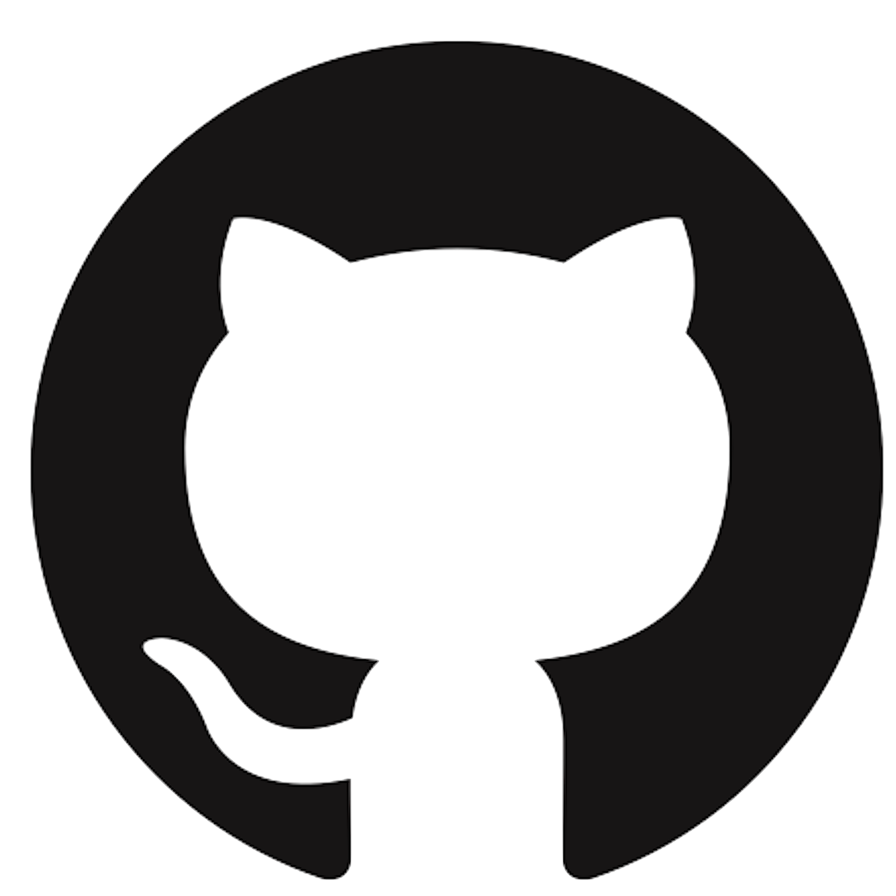
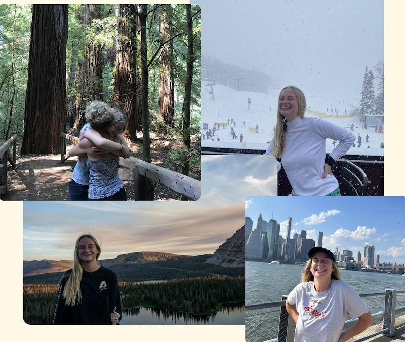
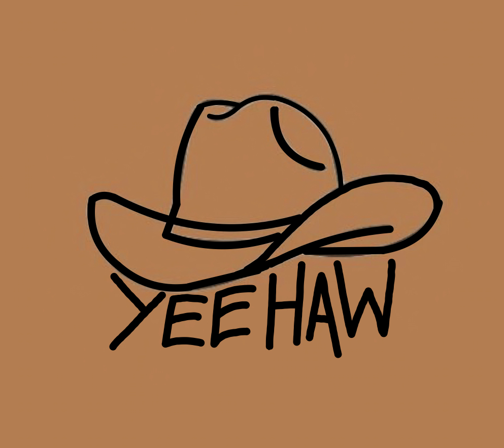

About Me
-
I am a student enrolled in Loyola Marymount University's Class of 2024, currently pursuing a major in Computer Science with a specialized focus on Artificial Intelligence, complemented by a minor in Interactive Gaming and Immersive Media. My love for programming dates back to my middle school days, where I successfully advocated for the introduction of a computer science course. Throughout high school, my commitment to computer science deepened, and I discovered a passion for sharing knowledge by volunteering to teach 4th graders the fundamentals of computer science. This affection for helping others transferred into my college career when I became a TA for other CS students. College life also continued to fuel my coding passion, and I work best in Python, Java, HTML, CSS, and Javascript. I realized that my love for computer science was rooted in my love of creation and I found a parallel passion for video game development and animation. Competent in both Unreal Engine and Adobe Animate, I enjoy the intersection between technology and artistry. Whether collaborating within a team or pursuing individual projects, my ultimate fulfillment lies in meaningful connections with others. Outside of the classroom, I enjoy reading, video games, camping, skiing, skateboarding, football, stand-up comedy, and playing board games with friends.
Contact Me: (801)-889-5045 aarmknec@lion.lmu.edu
 - 
Relevant Coursework
Projects
Mobile App
Party Finder, my final project in mobile app development, caters to college students. The app allows users to discover nearby parties, RSVP, view live party ratings, and report inappropriate users to ensure a safe enviroment. Despite its lighthearted nature, Party Finder integrates multiple APIs, connects to Firebase, and was voted the best app idea in the class.
Pac-Man AI
For my Cognitive Systems course, I developed a Pac-Man AI in a capture-the-flag environment exercise.
Trained with approximate Q-learning over numerous iterations, the agent has a defensive strategy
patrolling the border and an offensive strategy collecting pellets and returning them to home base.
In the class tournament, my Pac-Man agent earned second place.
Check out the code
here.
Escape
Escape, my final project in Advanced Animation using Unreal Engine 5, immerses the player in a scenario where they must navigate through a hotel, solving a series of puzzles to break free from multiple rooms and hallways. The project involves both the design and construction of the environment and the fine-tuning of mechanics and puzzles.
Briefcase
I served as the front-end developer for Briefcase, a continuing senior project in collaboration with the Innocence Project. Our app utilizes AI to analyze and summarize court transcripts, aiding lawyers in reviewing cases of the wrongfully incarcerated. Briefcase seamlessly integrates PDF transcript files, providing a digital platform with analysis features, collaboration tools, and intuitive user navigation.
YeeHaw
In my Languages and Automata course, my team and I developed YeeHaw, a cowboy-themed programming language designed for beginners to grasp logic concepts comfortably. YeeHaw is a statically typed and inferred language, following an object-oriented programming paradigm. The language features southern hospitality-inspired error messages to aid the learning experience.
Work Experience
Loyola Marymount University
Introduction to Computer Science Teaching Assistant
2023 - Present ~ Los Angeles, CA
- Conducted weekly tutoring sessions, dedicating 4 hours per week to assist students in comprehending complex logic concepts and debugging their code.
- Collaborated with a team of TA's to grade assignments for a large student population, demonstrating attention to detail and the ability to manage a high volume of work.
- Delivered the final 30 minutes of each class, reviewing upcoming assignments and problem sets, enhancing confidence in instructional capabilities and public speaking.
LMU Computer Science Summer Institute
Teaching Assistant
2023 ~ Los Angeles, CA
- Instructed computer science and web development fundamentals with a focus on soft-skills development.
- Conducted workshops on interviewing techniques and resume writing to enhance students' professional skills.
- Modified educational curriculum for improved relevance and effectiveness in meeting learning objectives.
- Orchestrated team-building activities and led group cohesion exercises for a class of 18 students.
National STEM Honor Society
Website Design Intern
2022 ~ Salt Lake City, UT
- Dived into the professional scene, juggling programming quirks and the ins and outs of different company departments.
- Acquired expertise in UI/UX design, exploring diverse web design strategies and honing design skills.
- Contributed to a programming team, honing collaborative skills on a broad scale.
- Enhanced proficiency in virtual work by refining skills in time management, adaptability, organization, and communication.